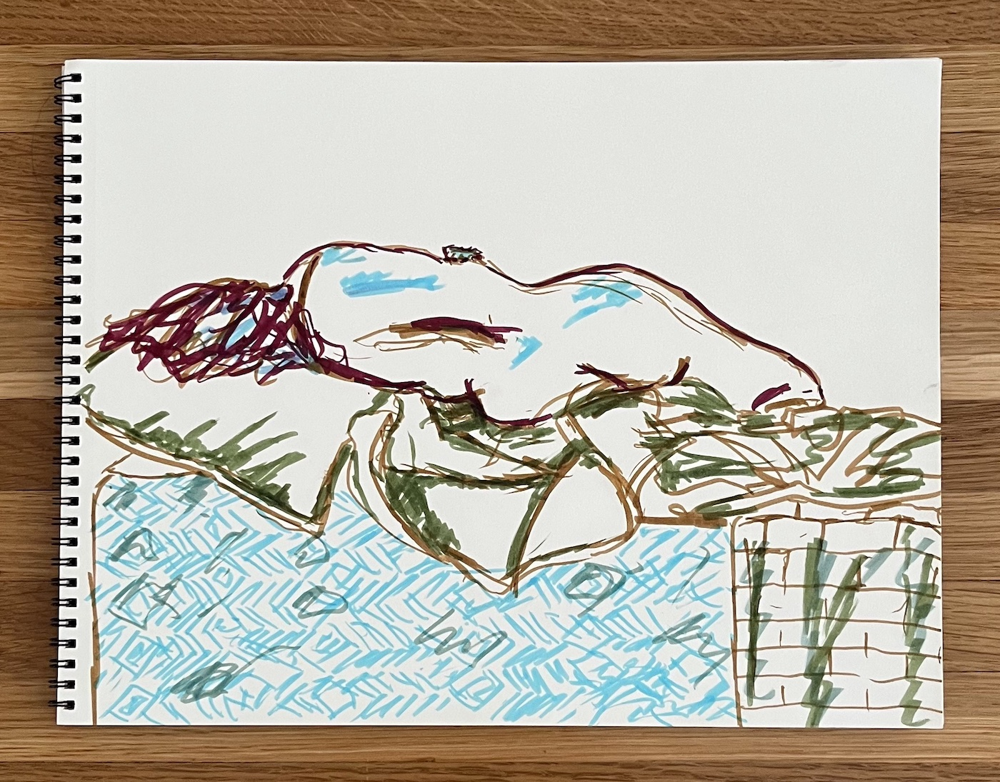
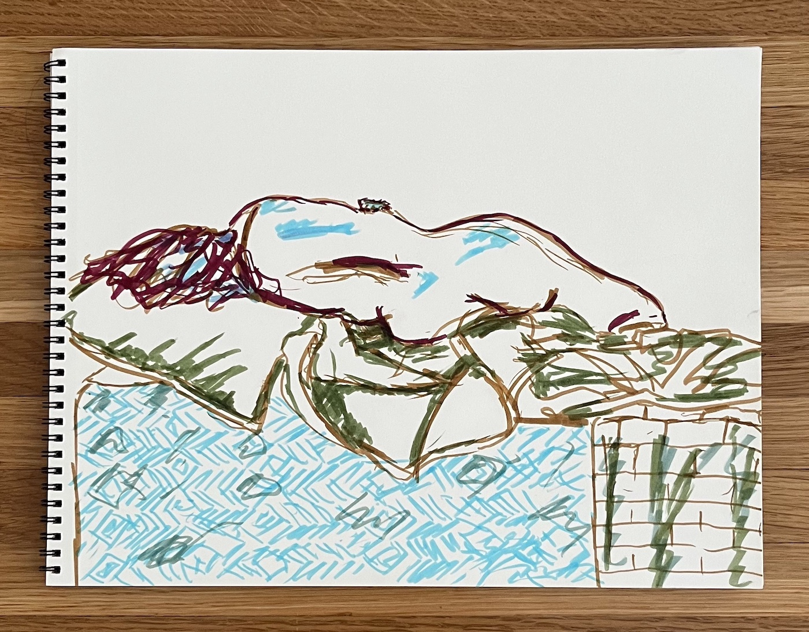

IN THIS ISSUE
Silver Spring - Maryland
Jake Young
Today I Am Happy
Katie Novotny
ig @kathnovotny · tk @kathnovotny · tw @KathNovotny
Today the sun shone brighter than it had in weeks. So I smiled bigger. I fell in love with my neighbor’s purple flowers And my neighbor’s neighbor’s lawn. I cradled my mom’s voice in my arms. I bottled up my dad’s laugh. I joked with the UPS guy cause I felt like making him smile. I counted the friendly faces that greeted me in a crowded room. I noticed the palate of the sunset. I celebrated every whisper that made up this moment of my life. I couldn’t believe how lucky I was to have this day. I celebrated because I know the depth of grey I was just in. When smiling feels impossible, When blue skies feel like a thick fog, Afraid of every step, Awaiting the moment where I fall into something worse, Something deeper, darker. When the phone emanates terror, A familiar voice brings on a delgue of tears, A stranger’s strange look starts The Spiral. I know the days that look perfect on the outside, But on the inside there is no hope. The days I am a burden weighing everyone down. That is why today, I celebrate. Because I don’t know what tomorrow will bring. So today, I dance. I sing. I smile. Today, I am me again.

Anisic Camphor Breaths
Onkos / Robert Woods-LaDue
ig @onkosonkosonkos · Onkos Bandcamp
Oh lord they sway! Taller than all! Each bloom holds a world, a place that can't hide. Eerie tones echo across the field. Each breath holds such a heady scent, A gift of nature pure and free. And as the celestial tines throb in time, single petals of twisted tissue spiral off. I raise my arms, my lungs explode in sweet perfume. Its beauty shines for all to see!
Selections from "the body is"
Shane King Zackery
ig @shanekingzackery · shanekingzackery.com
THE BODY IS. Political Banal Infinite Cadence Serendipitous Disidentified Subversive Transcended Selected pieces of visual artist Shandi Chester, Firenze, 2013
Lovers In Conversation
Hanna Bolaños
ig @hannabolanos · hannabolanos.com
Lovers In Conversation blends standalone interviews with Harnek and Ellen, a young couple living in East LA, centered on who they are and what brings them joy. Listeners are invited to hear them as individuals and as a unit, weaving in and out of anecdotes that showcase their similarities and differences, a relationship in audio form.
The Loop
GG Hawkins
Directed by GG Hawkins [@lostingraceland] Featuring Mark Sipka [#markspika] and Madison Lanesey [@lanes100] Director of Photography Amanda Ferrarese [@Aferrarese__] Sound By Clayton Root [@Phoenixfilmz] Edited By Christina O'Sullivan [@xtina.osully] Music By Michael Putnam [@Michaelputmanmusic]
The Recursive Hail Mary
Ethan Geller
ig @costcorothko · tk #corecore · tw @pragmatism
Wrote half of this in 2020, half in 2022. Was reading a lot of Gogol and playing Disco Elysium at the time.
A love story.
My walk home had been doomed from the start.
The rain never started, though I was prepared for it, having brought my rain coat to the office.
As I was leaving the house earlier, the coat shuddered against the morning breeze as soon as I opened the door. It hissed the way so many polyester garbs do, and that hiss formed syllables as each new gust of wind breached my house.
“Ride with me, Rus,” the coat sighed. “Nothing good can come of today”.
A mixture of pity and curiosity drove me to put the coat on. It sighed with relief the moment I took it off the hook, but as soon as I put it on, I felt remorse. Polyester things like this have nothing to offer me on a cool, sunny day like today, there’s no warmth nor comfort to be had in Polyester, just the loud crackle of brittle fabric rubbing against itself with each movement of the body, and a series of scattered wrinkles that could never be smoothed. But each time I went to take off the coat it shrieked at me: “How dare you! You’ll need me when it rains. When the rain starts, it will already be too late to put me on; The water infects your hair, your shirt, your lungs. To be wet is to be lost; To be protected, keep me on.”I’ve never liked jackets like these. I don’t even know why I got this one- maybe I bought it for a hiking trip that I postponed into the forever, or maybe a relic from my athleisurephase. I don’t remember anything from my athleisure phase.
I left the office at 4 PM–why not? There are several, precious people in this company that toil late into the night and keep our product competitive; I will never be one of those people. Somehow, I had entered a new, strange echelon within the company, where my main contributions are opinionsrather than labor. The trick to my success at this job has been to express the right opinions, which are rarely my actual opinions; They are merely the things that the executives want to hear. This has always been easy for me, for one reason: I don’t actually give a fuck. Who in their right mind would give a fuck about our product? It’s too specific, too complicated, and too abstract to give a fuck about: It’s a technical detail of a system that itself is a link in a chain of technical details, all coagulating into something only a handful of businesses need to maintain their current process. Those few workers who are passionate about it are fated to realize this at some point and implode; meanwhile, I will continue to be paid, and I will continue to not give a fuck. The only thing I do give a fuck about is getting home before the rain starts, so I left at 4.
The walk home quickly became uncomfortable–putting on the polyester jacket this morning was a mistake. I feel like I’ve been mummified-- how can I smile at passersby when I’m shrink-wrapped in polyester? I waved to the cashier of a bodega I frequent, and through the window I saw him smile and wave back. But I know in my heart this wasn’t a shared smile- he pitied me. Oh God,the cashier must be thinking. Another one of our customers has been sealed in a Polyester tomb. So I decided to take the jacket off and stuff it in my messenger bag. I tried to take it off in one swift gesture, but made the mistake of not taking my messenger bag off. As soon as the jacket tugged against the strap on my shoulder it freaked out. “What are you doing! I told you you’d need me when the rain starts. You need me, now more than ever.” I paid no attention to it. I eventually untangled the jacket from my bag, set the bag down, and efficiently took it off before forcing it into my messenger bag. “You’ll be wet!”it screamed, and made sure to drag out the word ‘wet’ as I locked it away with the zipper.
Barely a minute passed after this when I felt it coming. It started with an unmistakable breeze; Then, as I looked to the horizon, I saw the clouds encroaching. They moved faster than any clouds I had seen before, and silently. Maybe I was paralyzed and saw it coming, maybe I blacked out for a few minutes. Time gets weird in these sorts of situations; every second matters, yet every second is wasted. What matters is that the clouds were upon me, and the threat of rain was here. Now is when the polyester thing was needed. I zipped open my messenger bag to a loud, miserable hiss from the jacket: “Wet! Wet!!!! It is already too late for you. You’ve already succumbed to the Wet, Rus.” I couldn’t understand why the jacket spoke this way, but it’s awful, miserable sibilance drove me to close the bag again. There was only one answer for a creature like me under such a precipitous threat as a rain cloud: I sought shelter. This is how I found myself entering the church.
This church looked like most any other building on the block, which must be why I’ve never noticed it before. Its facade was drowned in fresh white paint, barely hiding deep scars in the wood that traced their way from under a window to the sidewalk. The door was a thick, deep red, but an uninteresting red– the kind of red you see in the dried blood on a tissue, or a withered rose. The kind of red you learn to forget. Stepping through this door felt like an invasion–I was encroaching upon something too old for me to understand. I could feel the beginnings of this church and knew they tunneled deep into the spacetime of this city: the church’s roots had wrapped around this block and out towards my house, centuries before I finally permeated its interior.
It was at this point when I finally felt known.At first, I thought I was self-actualizing. I was finally realizing I was a mere newcomer in this place, a place with unfathomable history. But any notion of this being a goodthing quickly dissipated. It was not me discovering myself. Rather, it was the church discovering me, not through my corporeal presence, but through the effect I had upon this space. The church was becoming aware of me the same way one becomes aware of an invading virus–you can’t see it, you can’t point at it, but you feel its symptoms all the same. I was keenly aware of the symptoms I was causing; each footstep rippled across the floor, and every breath I took would gently shake dust from the walls. I don’t belong here, but I decided to be here all the same.
How had I decided on being here, though? I had resented the way my jacket talked to me. I had cut off my nose to spite my face, disrobed my torso to spite my comfort. I had committed a sin of hubris and emerged from the trial of the outside world defeated, soaked from the pellets of a wrathful god-cloud. I looked for escape and found myself lanced into the ribcage of an everloving church. Shame rushed out of my throat and into my eyes; I shouldn’t be in this empty room. Everything I yearn to do here makes the world a worse place; to shrink into the corner like a blemish, to colonize some corner of a sharply angled pew, to wait just inside with hands and belly pressed against the door as if I cannot wait to escape. None of it helps. None of it feels like a belonging, there is no synergyfor me in this too-quiet world of wood and alabaster.
“It is better off without me.”
A quiet sigh of discontent was emitted from the confessional booth. I was stunned. There was no sound in this room prior to it, and the words didn’t seem to reflect from any of the walls. It was like whomever was speaking emitted phonemes like bullets aimed right at me. It was at this point another laser-mouthed voice, this one two octaves deeper, responded.
“What is better off without you?”
“Everything! This world hums with an economy I have no place in.”
“You feel alienated, alone.”
“I’m well past feelings at this point, пастор. I am simply void of meaning.”
“That’s nonsense. You feel meaningless; Feelings pass.”
“And yet that is how I know it is not mere feelings. This void is not something currently in transit or decay. It will not fade or change with time. It is like a boulder at the entrance of a cave: Immutable, and at its final destination. Everything was always going to settle on this. I can hate it every which way, but regardless of how I feel, this void of meaning is the equilibrium of me.”
“Fine. Let’s say you are doomed to eternal meaninglessness, like some fucking misanthropic gargoyle or something. Why bring this to your pastor? Why bring it to confession?”
“It’s the only thing left to confess.”
“But to be meaningless is not a sin.”
“Ah, it’s the worst sin of all. I can’t fix things. There are people and institutions in my life I’ve insulted, hurt and damaged; They’ve disappeared into lives that exclude me. It’s worse than being unfixable; I’m not someone worth fixing any sort of thing with. You see, пастор? To sin is reversible, but to be left with the echo of your sin, ringing out to eternity, with no hope of righting what you’ve wronged… it’s a fate worse than not existing at all in the first place.”
After this the pastor did not respond for a long time. I was left staring, moist and slack-jawed at a confessional booth that had suddenly become mute. I was still grappling with not belonging in this space when I believed it to be humanless; Now I am a voyeur to a private confession. Every new development felt like I had dug myself a little deeper to Hell. After an eternity, the pastor spoke.
“I recommend the Recursive Hail Mary.”
After a prolonged silence, the confessor spoke.
“Of course, пастор. I’ll begin when I get home.”
“You should perform the Hail Mary now. Before you leave the booth. Nothing you have said so far leads me to believe you would make it home.”
“That’s probably correct. I know you are right, and yet I’m afraid.”
“I thought you were past feelings.”
“I thought I was. You’ve already led me somewhere new, пастор. I begin now.”
Then another prolonged, dead silence. I could feel my ears hum. Then, barely audible, was the sound of something rubbing against cloth. This sound kept going, with no decay or stop, and gradually reached a crescendo, louder than I had ever heard cloth make sound before. It was at this point the confessor screamed in pain, and the cloth sound began to mix with the sound of a light dripping, like rain on a sidewalk. Alarmed, I ran to the door of the confession booth and ripped it open.
The booth was empty. No trace of the confessor could be seen here. My eyes moved from the floor, to the chair, to the perforated window. There was some glossy, almost wet thing in the confession window. I moved forward to get a closer look, and found what it was; a pair of tired, elderly blue eyes, and a set of wrinkled ears. These eyes and ears were not attached to a face; instead they jutted from the jet-black shadow. A voice slid out from behind the eyes.
“You’re soaked, Rus. Why have you entered my confessional?”
I pulled myself together, sat in the booth, and tried to look comfortable. “I heard a scream. Surely you heard it too? Do you know where it came from?”
“I’ll do you one better; I know who it came from. Why did you want to see the one who screamed?”
“They seemed like they were in danger; I wanted to help them.”
“Ah, so you, a meaningless person, tried to find meaning in helping another meaningless person.”
It took me a while to parse this sentence. I tapped out each syllable against the chair with my finger nails, considering each time the word meaningwas used.
“How do you know I’m meaningless?”
The pastor’s eyes blinked into the shadow before re-emerging, slicker than ever, transfixed on my chest.
“I see you and I see through you. I don’t see much there. All bones and cavities, unused cages for an unearned potential. A vortex of regret and dust at the center of your being. There’s a whole host of problems in this world that need to be solved; You subsist within the fallout of it all, having been silently complicit in the decay.”
I let my forearms fall between my legs and my shoulders followed them, slumping me into a ball somewhere between a fetal position and a tangled ball of yarn. I tried to protest and my tongue followed my shoulders in this awful bodyslump, this near-linear parade of limp body parts.
“Your body can contort, but it cannot act. Your life has amounted to a gust of useless gestures. A set of too-precious dreams culminating in a shrugged collapse. You’re an impotent climax, Rus.”
At this point my head was so far down my chest I could feel my neck bent by mere gravity like a reed in a storm. Even my nose and eyes began to slowly skew and stretch themselves down from my body like dripping clay. I took every fiber of my being to pull my tongue into speech, a complex dance my mouth had long forgotten how to do.
“What is to be done, пастор? I want to be put together again.”
The eyes flickered with anticipation. The ears twitched upwards briefly, just long enough to express morbid confirmation; He has nearly finished his work here.
“You follow in the footsteps of the one who screamed. You must find meaning in the Recursive Hail Mary.”
I knew these words before they were spoken. My eyes rolled in concentric circles, searching the damp oak corners of this small booth, before locking upon his eyes.
“That’s great, pastor. That’s all well and good. I do not know what the recursive hail mary is. I haven’t witnessed it... Only heard the process... Never saw the result.”
“Then you know enough. First you perform the sign of the cross. Start with your index finger on your forehead. Drag it down to your navel. Then bring it to your left shoulder, then drag it across your chest to the right shoulder. This is the root cross. If you have found the purpose you need within that gesture, you may stop. Otherwise, we begin to perform two signs of the cross, half the size each, on the left and right sides of our torso, with our finger applying twice the pressure.”
“And what if I haven’t found it then? Continue to split the crosses?”
“Split the crosses, Rus, and push deeper into your chest. First four, then eight, and so on and so forth. Excavate your soul in powers of two.”
“I start now, father.”
I place the finger on my forehead. It’s the first clarity I’ve had since we began our conversation. Here is my forehead, I thought. It’s really here, and when I touch it, my hand doesn’t pass through. I’m present, corporeal. I’m a thing to be reckoned with. I drag the finger downwards, tugging at my shirt. I have a glimpse of something that might provide meaning: The shape of a face, the corner of a jawline shimmering on the wall across from me. It disappears as soon as my eyes move towards it. I have more doubt than certainty at this point that it was anything at all. I continue to complete the cross. As my finger drags from left to right across my chest I feel the hair of my chest pulled along with it. Finished, nothing. Down to the next level, two crosses etched into my torso.
The second layer of crosses didn’t hurt yet. I caught something like a glimpse of the face again. This time it was a browline, between the lowest two of my right ribs. There’s something I can live for here, hidden just below how deep I’m digging… a tinge of relief passes through me. I almost want to skip the right side, but for due diligence, for completeness, I still perform it, breadth-first. As I perform the right-side cross, I realize in my excitement I left a light bruise on my left-side ribs where I saw the face… all the better to mark it, I suppose.
Four crosses. I perform the first cross quickly, knowing that I won’t see anything there. Upon beginning the upper-left cross, I see it again. But the glimmer has no more clarity, no new information. It’s still almost a hallucination of the thing, catching the light like dust. No matter, I’ll be back for it. I have now begun to bruise across my torso. I didn’t realize my index finger could be this strong.
At this point I’ve begun to lose track of how many times I’ve recursed. Sixteen crosses, 32… my hand does the work my brain will not. I’m at cross 624 of a 16384-cross layer when a flash of white-yellow light occurs not three feet away from my face! I suddenly see the face with brilliant radiance across the room. It’s beautiful, either genderless or full of a spectrum of gender I couldn’t comprehend. The face seems composed of everyone I’ve ever loved but nobody in particular. And it stays! I have done my work. I have found meaning in this face. My eyes roll towards my hand. I realize I’ve dug deeper into my chest than I had ever realized. There were deep grooves across the entirety of my chest. It hurt too much to focus my eyes on them. And where my finger laid, where I had completed the search, was pierced through my heart, still beating. I tried to scream, but my jaw was slack. I dripped down onto the floor next to my bag, striking it and causing my jacket to spill out in a cacophony of plastic. “Oh god. You’re wet, Rus.” I look up at the pastor. His eyes pull backwards suddenly, like the sliding action of a crossbow cocked with an arrow, and never come back.
Now my eyelids draw back as well, but more like a theater curtain; I’ve lost an indeterminate amount of time. My body hurts but feels more composed, more intentional than it ever has before. I try to move my arm and a sharp sting of pain rips across my pectoral muscles. I yelp and lay my arm back down immediately, but here the paperlike sigh of an old friend; My polyester jacket is hugged tight across my chest.
“You’d be long dead if it wasn’t for this jacket here.” A graveled voice immediately to my right said, gently but firmly, from a new face. “Your chest was shredded by some kind of animal. Would have taken miles of bandages to staunch! Tying this jacket across your chest was the smartest thing anyone could do. You have a guardian angel out there.”
I was able to cast a glance at the origin of the voice. I was in a hospital, that much was certain. This man was dressed in the bleach-sea scrubs of a surgeon of some sort. But he couldn’t be a surgeon, at least not in his current state; He wore bandages across the top half of his face. He had no visible eyes or ears. He had a large, curled mouth, and a long nose that flared out into grotesquely large nostrils. As he spoke, he would occasionally snort suddenly and violently, emitting a guttural warble that sounded like a tape machine stopping and starting up. I pulled myself forward into a sitting position. This hurt less than I had initially feared, and, inspired by this, I had the courage to speak.
“Who are you?”
“I’m your surgeon. You arrived broken and ugly. Now you get to leave one half.”
“I’m sure you saved what you could, thank you. Excuse me for asking, but how do you perform surgery? You have no eyes nor ears.”
“Thanks for reminding me. I don’t need them for my particular approach: I delegate, I prescribe. Decades of work has been packed into me, and now I stand before you as a mountain of experience. It doesn’t matter that I can’t observe you. I know your type, I consider those I’ve treated before you, and I intuit the rest.”
This filled me with an immediate sense of trust in the doctor. How was I so lucky to be placed in his care? I realized the terrible answer all at once; I needed his care more than others. I was worse off than everyone else in the hospital. Guilt overwhelmed me; I started to cry, but tensed every torn, pained muscle in my body to recompose myself. My voice cracked, but it was strong and sure: “Thank you.”
“You have a lot of people to thank. Like I said, you’d be dead on arrival if it weren’t for that ugly Patagonia jacket. The cashier at the bodega across from the church heard the scream and ran over. I don’t say this often, since it’s bad for business, but you should really be dead! Instead, you’ll be able to go home tomorrow, and will heal up over the coming month. It took a whole damn community to get you where you are now, and that’s a miracle.”
That is a miracle. I simply could not understand the projectI had become for so many people, a project that had no potential return or benefit to them. I’m a black hole of care. Why would anyone care for me? Simply because I needed it? At this point I know I will spend the rest of my life figuring that out.
“So what do you prescribe, good doctor? How do I heal?”
“Nothing to do but wait for the work of healing to be done. You’ll feel frail, incomplete, but you will become whole eventually. In the meantime, find new ways to love and be proud of your body. Get a haircut, piercing, tattoo–use your imagination. Look in the mirror and think of ways to make yourself smile. Eventually you’ll forget you’re mending. But you should certainly invest some effort in being less ugly.”
“Ugly? Doctor, heal thyself.”
“Get the fuck out.”
My company’s health insurance has taken on the financial burden of this whole awkward endeavor. I get to walk away, all things considered, somewhat scotfree. I gently fold my blood-spattered polyester jacket-friend and insert him into my messenger bag, leaving it open so that he can breathe comfortably. The jacket says nothing. I say nothing back. I walk past the bodega and make eye contact with the cashier, from whom I had presumed so much pity and shame. He saw me, tilted his head in awe, and began to cry, smiling quietly. I smile and wave. His smile broadens into something goofy and earnest, all teeth and chapped lips. He turns back to his customer. I continue to walk.
I take a detour and walk up to a viewpoint near my house. I pressed my still-tender abdomen against the railing, looking out into the sound. I watch the gulls meander their way over palegreen firs towards the pastel orange and aquamarine tic-tacs of houses down the hill. Beyond them, I watch tiny specular alabaster triangles, sailboats of some sort, glide across a gray-green sea. Beyond them, the sharp fractals of a mountain range, drenched in the pale blue of atmosphere, topped by checkerboard snowpack. I drink deep of all of it, trying to nourish myself for a conversation I've never learned to have before. I realize I will never feel ready for it. I just need to complete whatever imperfect version of this conversation ends up happening and forgive myself for it later.
I gently pull my jacket out of the bag. He is silent, still, waiting. Maybe he's confused, or scared. I can't presume what he's feeling. I can only express what I need to say.
"I love you."
The jacket crinkles in confusion.
"I love you, even when I don't need you. When the skies are clear and I don't wear you, I will still love you. When I'm ashamed and don't want to be seen with you, I will still love you. My love for you isn't contingent on how useful you are to me. It's an accumulation of our shared experience. It's a referendum on the ways we've grown entangled with each other. It's a promise of what we'd do for each other. I love you, and I need you to trust that I will love you even when I don't need you."
My jacket, still caked in splotches of my blood, stays silent for a while. Over time, he begins to shake, audibly cracking and shedding specks of my blood and flesh, developing new cracks that will never resolve. Three times, my jacket attempts to say something, but stops and vibrates again. Finally there is a lapse in this nervous energy, and he speaks.
"If you love me then put me on."
"But it's so sunny out."
"If you love me, put me on. I know you don't need me right now, but I mean, I worry about you, and if you love me, then give me the peace of mind I can only have if I'm taking care of you." His words come quicker now, and the jacket is now trembling in my arms. "You get to love me and keep me at bay, but God fucking dammit, if you loved me you would let me take care of this person I love so goddamn much. So if you love me– " the jacket is now weeping, thick flakes of dried blood falling to the ground beneath him, and he begins to look clean again. "If you love me, fucking let me take care of you." The jacket takes a moment, recomposes himself for one final shot across the bow. "Rus, If you love me, put me on."
I go through three stages of emotion in 12 seconds. At first I feel dumb, ashamed that I've hurt him so much, in some naïve attempt to protect him from my fragility. But shame isn't useful. The jacket has, in all his wisdom, given us a path forward together, even though it hurt so much to go through, even though he has every right to hate me, he was able to plot a course in which we can still love each other. The shame is flushed out by a wave of gratitude. I can’t find a word for the third stage of emotion I went through. I opened the jacket and weaved my arms through him. I zipped him up and felt his plasticky utilitarian polyester against every square inch of my wounded torso. And I felt less ugly than I ever had before in his embrace.
"Ride with me, Rus." The jacket whispered at my right collarbone. "And nothing bad can come of tomorrow."
 

Thank you for visiting QUANTITY MAGAZINE!
This thing is run by Molly Bolten and Devin Smith.
If you would like to contribute, email us!!